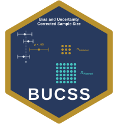

Simulate the Literature a Plan Came From and Audit How Often It Works
Source:R/bucss-sensitivity.R
ss_buc_sensitivity.Rdss_buc_sensitivity takes a plan returned by any
ss_buc_* function and asks the question the method's assurance
claim is really about: if the true effect were a particular value, and a
literature published only the prior studies that reached significance,
how often would a plan built this way actually reach the target power?
Arguments
- object
A plan returned by any
ss_buc_*function.- true_ncp
The assumed true noncentrality parameter of the prior study's design, on the same scale as the
ncp_adjustedrow ofobject. Required; there is deliberately no default.- replications
Number of published prior studies to simulate. At an assurance of .80 the default of 1000 gives
attainment_with_refusalsa Monte Carlo standard error near .013, and 10000 about .004; both are reported. The standard error ofattainment, which counts only the issued plans, is larger when many prior studies are refused.- seed
Optional random number seed.
NULL(the default) draws from the caller's own random number stream, advancing it as any simulation does. When a seed is supplied, the caller's random number state and generator are restored on exit (and no state is left behind if the caller had none). A seed reproduces a result only under the same random number generators (seeRNGkind).
Value
An object of class bucss_sensitivity, a data.frame
with columns term and value carrying the assumed true
parameter and the plan's own ncp_adjusted for comparison, the
number of replications, the publication and refusal rates, the two
attainment rates each with its Monte Carlo standard error, the sample size
the true effect requires, and the quartiles of the sample sizes the
simulated plans called for. The design, the effect tested (for designs
with one), the sample size unit, the requested assurance, and the
requested desired_power travel as attributes. If every simulated
prior study is refused, attainment, its standard error, and the
quartiles are NA, with a warning.
Details
The bias and uncertainty correction rests on a claim about the long
run. At assurance = .80, eight replications in ten should reach the
target power, the probability that a study's test rejects the null
hypothesis when the effect is present (Maxwell, Delaney, & Kelley, 2027).
That claim is a statement about a whole literature, and a user planning
one study never sees it exercised.
This function exercises it on the user's own numbers. It reads the design
and the planning inputs off the plan you pass it, simulates prior studies
of that design from a true effect you name, discards the ones a
literature would not have published (those failing to reach significance
at alpha_prior), runs the same planner on each survivor, and
reports what happened.
You must name the true effect. There is no default, deliberately.
Defaulting to the corrected estimate would be convenient and circular: it
would ask the method to grade its own answer. true_ncp is on the
same scale as the ncp_adjusted the plan reports, so the plan's own
value is the natural anchor. Run the function at that value, at a fraction
of it, and at a multiple of it; the interesting reading is how fast the
attainment rate falls when the truth is smaller than the corrected
estimate.
Reading the output. A plan attains the target when its sample
size is at least the sample size the true effect actually requires, which
is reported as size_at_true_effect. Two attainment rates are given,
and the difference between them is not a rounding detail:
attainmentcounts only the prior studies for which the method issued a plan. This is what a user experiences.attainment_with_refusalscounts a refusal (the planner's stop when the corrected noncentrality parameter is zero, or, for a design the planner reduces to a balanced one, its stop when a published statistic is not significant at the balanced design's degrees of freedom) as attaining, because declining to plan is the limiting case of an arbitrarily conservative plan. This is the quantity the assurance guarantee is about, and it should land onassurance. For a prior study that the planner reduces to a balanced design it can land above, because the planner is then conservative: about .84 at anassuranceof .80 for prior groups of 10 and 90 in the independent t test.
When the refusal rate is high the first number sits well below
assurance, and that is not a defect: it is the visible price of the
method refusing rather than guessing. Its expected value is
(assurance - refusal_rate)/(1 - refusal_rate), or more when
attainment_with_refusals lands above assurance.
What this can and cannot detect. The prior studies are drawn from
the sampling distribution the method assumes for that design, so this is a
check that the correction and the planned sample size are internally
right, and a demonstration of what publication bias does. It cannot detect
a violated distributional assumption, since the simulation shares that
assumption. For ss_buc_welch_t, in particular, it holds the
variance ratio fixed at the value you supplied. For the regression
planners the simulated prior studies follow the plan's own
random_predictors setting, so audit a plan in the frame your
research actually uses. For a within-subjects or split-plot plan made
with epsilon below 1, the prior studies are drawn under the same
approximation to a departure from sphericity that the planner corrects
under, so the audit checks the method's internal consistency, not the
approximation itself; the planner's help page reports how well the
approximation holds against simulated raw data.
The package-wide verification ships with the package. This
function audits one plan; the harness that verifies the planners
themselves, including checks against raw simulated data that do not share
the method's distributional assumptions (bivariate normal samples for the
correlation planner, multivariate normal samples for a regression
coefficient with random_predictors = TRUE, two-group normal
samples for the Welch planner), is
installed with BUCSS and can be rerun in a few seconds with
source(system.file("tools", "verify_by_simulation.R", package =
"BUCSS")).
References
Anderson, S. F., & Kelley, K. (2024). Sample size planning for replication studies: The devil is in the design. Psychological Methods, 29, 844–867. doi:10.1037/met0000520
Anderson, S. F., Kelley, K., & Maxwell, S. E. (2017). Sample-size planning for more accurate statistical power: A method adjusting sample effect sizes for publication bias and uncertainty. Psychological Science, 28, 1547–1562. doi:10.1177/0956797617723724
Anderson, S. F., & Maxwell, S. E. (2017). Addressing the "replication crisis": Using original studies to design replication studies with appropriate statistical power. Multivariate Behavioral Research, 52, 305–324. doi:10.1080/00273171.2017.1289361
Kelley, K., & Maxwell, S. E. (2003). Sample size for multiple regression: Obtaining regression coefficients that are accurate, not simply significant. Psychological Methods, 8, 305–321. doi:10.1037/1082-989X.8.3.305
Maxwell, S. E., Delaney, H. D., & Kelley, K. (2027). Designing experiments and analyzing data: A model comparison perspective (4th ed.). Routledge.
Taylor, D. J., & Muller, K. E. (1996). Bias in linear model power and sample size calculation due to estimating noncentrality. Communications in Statistics: Theory and Methods, 25, 1595–1610. doi:10.1080/03610929608831787
See also
ss_buc_independent_t and the other ss_buc_*
planners, whose results this function takes as input.
Author
Ken Kelley (kkelley@nd.edu) and Samantha F. Anderson (samantha.f.anderson@asu.edu)
Examples
plan <- ss_buc_independent_t(t_observed = 3, n = c(50, 55), assurance = .80)
ncp <- plan$value[plan$term == "ncp_adjusted"]
ncp
#> [1] 1.338019
# Take the corrected estimate at face value as the truth. (200 replications
# keep the example quick: the rate counting refusals is good to about .03,
# the rate over issued plans to about .06. A reported audit deserves 10000.)
ss_buc_sensitivity(plan, true_ncp = ncp, replications = 200, seed = 113)
#> term value
#> true_ncp 1.34
#> ncp_adjusted 1.34
#> replications 200
#> publication_rate 0.263
#> refusal_rate 0.57
#> attainment 0.419
#> attainment_mcse 0.0532
#> attainment_with_refusals 0.75
#> attainment_with_refusals_mcse 0.0306
#> size_at_true_effect 233
#> size_q25 98.8
#> size_median 182
#> size_q75 1050
#>
#> Design: Independent t test
#> Sample size unit: per group
#> Requested assurance: .80
#> Target power: .80
# And ask what happens if the truth is smaller than the correction assumed.
ss_buc_sensitivity(plan, true_ncp = .6 * ncp, replications = 200, seed = 113)
#> term value
#> true_ncp 0.803
#> ncp_adjusted 1.34
#> replications 200
#> publication_rate 0.125
#> refusal_rate 0.735
#> attainment 0.34
#> attainment_mcse 0.0651
#> attainment_with_refusals 0.825
#> attainment_with_refusals_mcse 0.0269
#> size_at_true_effect 642
#> size_q25 137
#> size_median 288
#> size_q75 1034
#>
#> Design: Independent t test
#> Sample size unit: per group
#> Requested assurance: .80
#> Target power: .80